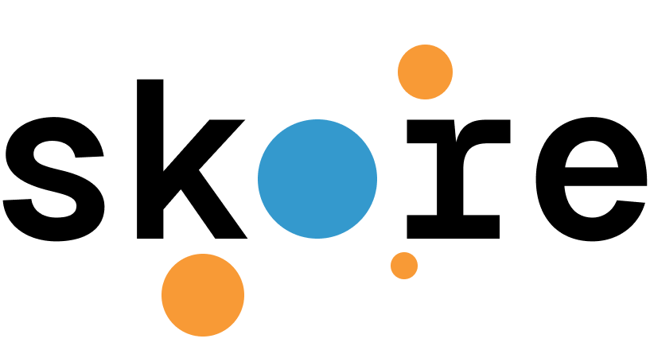
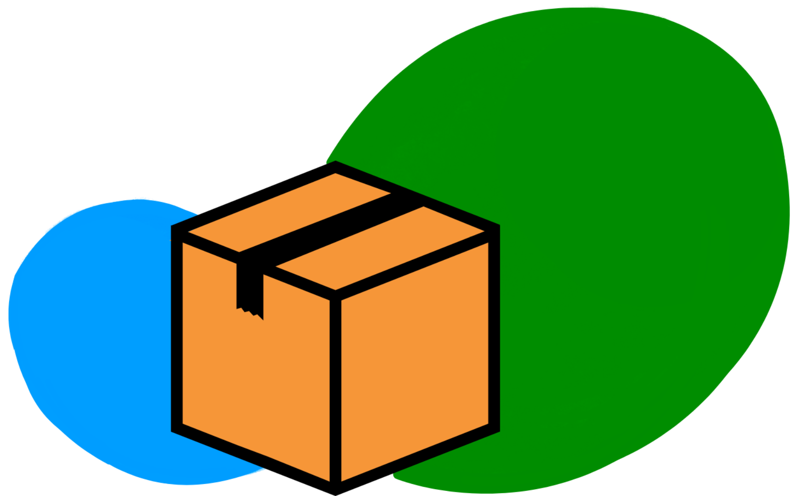
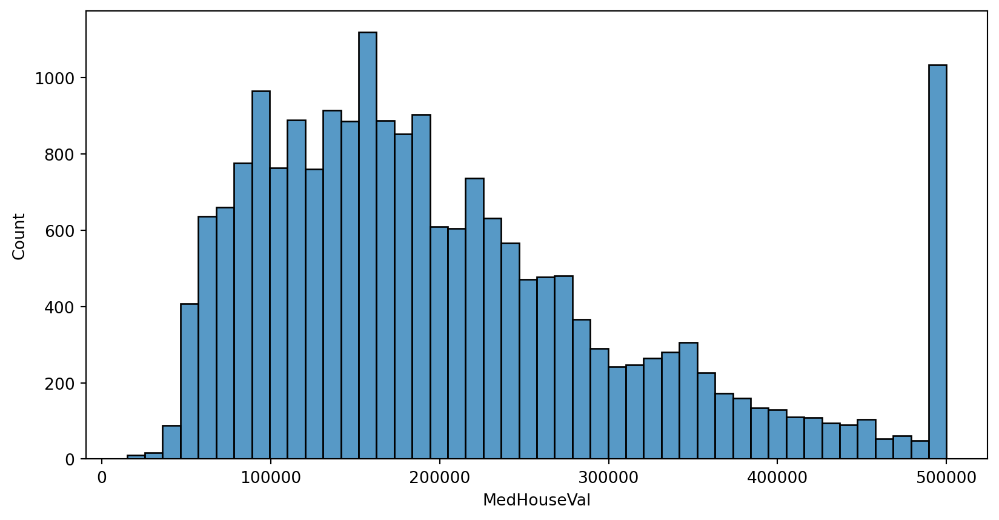

Skore
L’excellence scientifique et projet ML tout en un, une nouvelle étoile dans la sk-alaxie
Marie Sacksick
Probabl, WiMLDS Paris.
2025-12-11
Some context about the scikit-learn
Towards an end-to-end data science ecosystem



From data source to model deployment
about probabl
Probabl
The official home of scikit-learn expertise
8 Open source source developers Out of 30 employees
7 librairies
(scikit-learn, skrub, skops, imbalanced-learn, hazardous, fairlearn & joblib)
Marie Sacksick
Product Engineer
Co-organizer of Women in Machine Learning and Data Science Paris
Let’s dig into a use-case!

| MedInc | HouseAge | AveRooms | AveBedrms | Population | AveOccup | Latitude | Longitude | |
|---|---|---|---|---|---|---|---|---|
| count | 20640.000000 | 20640.000000 | 20640.000000 | 20640.000000 | 20640.000000 | 20640.000000 | 20640.000000 | 20640.000000 |
| mean | 3.870671 | 28.639486 | 5.429000 | 1.096675 | 1425.476744 | 3.070655 | 35.631861 | -119.569704 |
| std | 1.899822 | 12.585558 | 2.474173 | 0.473911 | 1132.462122 | 10.386050 | 2.135952 | 2.003532 |
| min | 0.499900 | 1.000000 | 0.846154 | 0.333333 | 3.000000 | 0.692308 | 32.540000 | -124.350000 |
| 25% | 2.563400 | 18.000000 | 4.440716 | 1.006079 | 787.000000 | 2.429741 | 33.930000 | -121.800000 |
| 50% | 3.534800 | 29.000000 | 5.229129 | 1.048780 | 1166.000000 | 2.818116 | 34.260000 | -118.490000 |
| 75% | 4.743250 | 37.000000 | 6.052381 | 1.099526 | 1725.000000 | 3.282261 | 37.710000 | -118.010000 |
| max | 15.000100 | 52.000000 | 141.909091 | 34.066667 | 35682.000000 | 1243.333333 | 41.950000 | -114.310000 |
╭────────────────────────────── RandomStateUnsetWarning ───────────────────────────────╮ │ We recommend setting the parameter `random_state`. This will ensure the │ │ reproducibility of your work. │ ╰──────────────────────────────────────────────────────────────────────────────────────╯
╭───────────────────────────────── ShuffleTrueWarning ─────────────────────────────────╮ │ We detected that the `shuffle` parameter is set to `True` either explicitly or from │ │ its default value. In case of time-ordered events (even if they are independent), │ │ this will result in inflated model performance evaluation because natural drift will │ │ not be taken into account. We recommend setting the shuffle parameter to `False` in │ │ order to ensure the evaluation process is really representative of your production │ │ release process. │ ╰──────────────────────────────────────────────────────────────────────────────────────╯
There are 15480 examples in the training set
There are 5160 examples in the testing set╭──────────────────── Tools to diagnose estimator LinearRegression ────────────────────╮ │ EstimatorReport │ │ ├── .metrics │ │ │ ├── .prediction_error(...) - Plot the prediction error of a regression │ │ │ │ model. │ │ │ ├── .r2(...) (↗︎) - Compute the R² score. │ │ │ ├── .rmse(...) (↘︎) - Compute the root mean squared error. │ │ │ ├── .timings(...) - Get all measured processing times related │ │ │ │ to the estimator. │ │ │ ├── .custom_metric(...) - Compute a custom metric. │ │ │ └── .summarize(...) - Report a set of metrics for our estimator. │ │ ├── .feature_importance │ │ │ ├── .coefficients(...) - Retrieve the coefficients of a linear │ │ │ │ model, including the intercept. │ │ │ └── .permutation(...) - Report the permutation feature importance. │ │ ├── .data │ │ │ └── .analyze(...) - Plot dataset statistics. │ │ ├── .cache_predictions(...) - Cache estimator's predictions. │ │ ├── .clear_cache(...) - Clear the cache. │ │ ├── .get_predictions(...) - Get estimator's predictions. │ │ └── Attributes │ │ ├── .X_test - Testing data │ │ ├── .X_train - Training data │ │ ├── .y_test - Testing target │ │ ├── .y_train - Training target │ │ ├── .estimator - Estimator to make the report from │ │ ├── .estimator_ - The cloned or copied estimator │ │ ├── .estimator_name_ - The name of the estimator │ │ ├── .fit - Whether to fit the estimator on the │ │ │ training data │ │ ├── .fit_time_ - The time taken to fit the estimator, in │ │ │ seconds │ │ ├── .ml_task - No description available │ │ └── .pos_label - For binary classification, the positive │ │ class │ │ │ │ │ │ Legend: │ │ (↗︎) higher is better (↘︎) lower is better │ ╰──────────────────────────────────────────────────────────────────────────────────────╯
def business_loss(y_true_list, y_pred_list):
loss = 0
for y_true_, y_pred_ in zip(y_true_list, y_pred_list):
### if under the market: 100% loss for me
if y_true_ > y_pred_:
loss = loss + float(y_true_ - y_pred_)
### If I'm above the market, I will waste some time to sell.
### Each month costs me 2k, and every month, I lower the price by 10k
else:
loss = loss + float(2*(y_pred_-y_true_)/10)
return loss
result = lr_est_rep.metrics.custom_metric(
metric_function=business_loss,
response_method="predict"
)By using this model, the loss estimated on the test set is 163.307M$╭──────────────────────────── Tools to compare estimators ─────────────────────────────╮ │ ComparisonReport │ │ ├── .metrics │ │ │ ├── .prediction_error(...) - Plot the prediction error of a regression │ │ │ │ model. │ │ │ ├── .r2(...) (↗︎) - Compute the R² score. │ │ │ ├── .rmse(...) (↘︎) - Compute the root mean squared error. │ │ │ ├── .timings(...) - Get all measured processing times related │ │ │ │ to the different estimators. │ │ │ ├── .custom_metric(...) - Compute a custom metric. │ │ │ └── .summarize(...) - Report a set of metrics for the estimators. │ │ ├── .feature_importance │ │ ├── .cache_predictions(...) - Cache the predictions for sub-estimators │ │ │ reports. │ │ ├── .clear_cache(...) - Clear the cache. │ │ ├── .get_predictions(...) - Get predictions from the underlying │ │ │ reports. │ │ └── Attributes │ │ ├── .n_jobs - Number of jobs to run in parallel │ │ ├── .pos_label - No description available │ │ └── .reports_ - The compared reports │ │ │ │ │ │ Legend: │ │ (↗︎) higher is better (↘︎) lower is better │ ╰──────────────────────────────────────────────────────────────────────────────────────╯
Vision
- Develop tooling to create data science artifacts
- Help at following good practices for the problem at hand
- Help at the collaboration to carry on data science project
Roadmap
- Cover multiple aspects of the data science life cycles: data, model, etc.
- Help at creating artifacts dedicated to the problem at hand and the model
- Reduce the complexity related to code
Wrap-up
- Provide tools to evaluate predictive models
- Make some internal magic to reduce user friction
- Allow for persistence of artifacts
Scanning slide! (and Q&A)
Join us
Link to skore repository

https://github.com/MarieSacksick/talk_open_source_xp_conf_2025